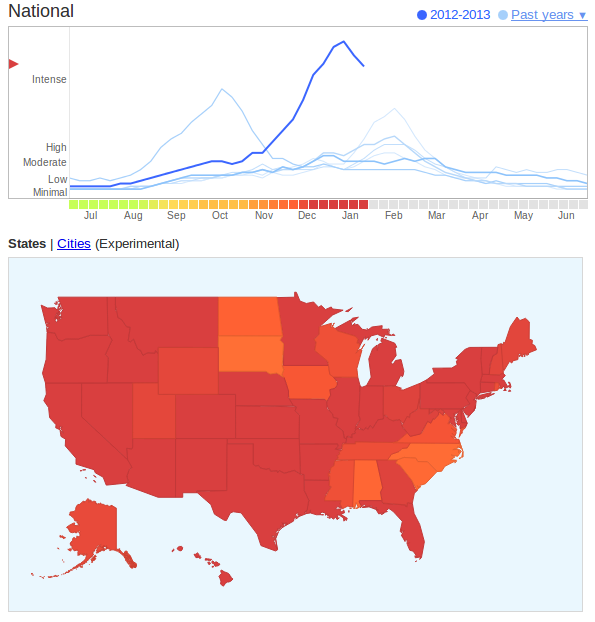
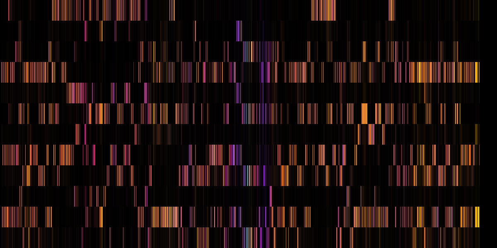

2013-02-01-CaseStudies
Table of Contents
1 Questions
- Differences from CS 294 Behavioral Data Mining
- Course Load
- Readings: after lecture
1.1 Memory notes
- Spaced intervals makes memorizing easiest
2 Case Studies
3 Process two_col
- Knowledge Discovery in Databases (KDD)
- Selection
- Pre-processing
- Transformation
- Data Mining
- Interpretation/Evaluation
- Cross Industry Standard Process for Data Mining
- Business Understanding
- Data Understanding
- Data Preparation
- Modeling
- Evaluation
- Deployment
3.1 Data to Knowledge notes
- We learned last week that the goal of data mining is to turn raw data into knowledge
4 Search Engine Logs
193.139.1 jim [10/Oct/2013:13:55:36 -0700] "GET /search?query=headache HTTP/1.1" 200 9288 282.482.3 shreyas [10/Oct/2013:13:56:36 -0700] "GET /search?query=bananas HTTP/1.1" 200 2929 345.114.1 steven [10/Oct/2013:13:56:37 -0700] "GET /search?query=cold HTTP/1.1" 200 8232 10.328.52 anne [10/Oct/2013:13:56:39 -0700] "GET /search?query=flu+shot HTTP/1.1" 200 2342 10.328.52 lily [10/Oct/2013:13:57:40 -0700] "GET /search?query=i290 HTTP/1.1" 200 2342
- what is a common theme in these queries?
4.1 Raw Data notes
- raw data comes in many forms
- often well use tech examples: eg search engine logs
- these have information like user, IP, date-time, HTTP version, query
- can we extract actionable information from it?
5 Flu Trends two_col
- Use dates to plot trends over time
- Use IPs to show activity per state or city
- Other ideas?

5.1 Other ideas notes
- What other information could you extract from log data?
- Spread of flu over countries, cities?
- Time of day? Do people notice in the morning?
- correlated with any other activity? (eg. travel)
- best day of the week to call in sick (and get away with it)?
6 Asking Questions
- Many potential discoveries within search logs
- Asking meaningful questions is a difficult but essential part of data mining
- Algorithms can answer questions for you, but it can't ask them
6.1 No magic notes
- Data mining is not a magical machine into which one throws data and gets out interesting facts
- Data + question + algorithm suited for question => potential insights
7 Data Mining Process animate
- Data cleaning
- Data integration
- Data selection
- Data transformation
- Data mining*
- Pattern evaluation
- Knowledge presentation
7.1 We cover the full process notes
- Cleaning
- remove abuse requests, "Estimates for Connecticut for weeks 2012-12-16 to 2013-01-06 were affected by a software glitch"
- Integration
- Collecting logs from different data centers, maybe from different formats (over the years)
- Selection
- IPs, dates, queries
- Transformation
- IP to location. Dates to local time.
- Mining
- what words are associated with the flu? cold? fever? other languages?
- Evaluation
- This year worse than last, peaking later.
- Presentation
- plotting, cartograms
8 Data Preparation
- Collecting, cleaning, integrating takes > 50% of the time in real world situations
- Explains difficulty in finding good candidates for Data Scientist roles
8.1 Data Scientist notes
- In industry, most companies are hiring engineers to interact with the full stack, so that they can collect data
- If preperation is > 50% and they hire you just for algorithms, they need ot hire > 1 other person just to support you
- How many of you like just preparing data?
9 Transactional Data
- Discrete history of events, containing some minimum amount of data:
- Subject: Who initiated action?
- Verb: What was done?
- Object: What was it done to?
- Timestamp: When?
9.1 Storage notes
- Most common example is purchase history
- Subject: user ID, or name
- Verb: In logs, can vary. In databases, you'll have a purchases table, so verb is assumed to be "purchased"
- Object: product IDs (or in web logs, web pages)
- Timestamp: Make sure you account for timezones
- Other Data: previous page, extra info about action (purchase with CC? Cash?)
10 Other Data
- Often does not contain timestamps
- Spatial Data
- Multimedia

10.1 Data notes
- Maps in general can be used to find interesting information: where are cities typically located? What are properties of well planned cities?
- Videos have a time component, but are not transactional.
- Music can be seen non-linearly and analyzed
- img: http://flyingpudding.com/projects/viz_music/
11 Purpose of Data Mining
- Purpose
- Obtaining actionable knowledge
- Descriptive
- explains data already seen
- Predictive
- Immediately understand new data
11.1 Tasks notes
- At Amazon, dashboards for different countries
- Americans shopped at work; Germans shopped early morning, early evening; Japanese shopped late at night
- Can help with capacity planning, ideas for discounts, warehouse staffing
- Predictive: at Yelp, what business are you most likely to want to review next? As you have activity, instantly understand what is the best recommendation
12 Types of Models animate
- Classifiers
- Regressions
- Clustering
- Outlier
12.1 Details notes
- Classifiers
- describes and distinguishes cases. Yelp may want to find a category for a business based on the reviews and business description
- Regressions
- Predict a continuous value. Eg. predict a home's selling price given sq footage, # of bedrooms
- Clustering
- find "natural" groups of data without labels
- Outlier
- find anomalous transactions, eg. finding fraud for credit cards
12.2 Tip of the Iceburg two_col

- Thousands of ways to calculate a model
- Combinatorially more ways to combine them
- In technique, large amount of overlap between purpose
12.3 Survey notes
- ML and DM fields churn these models out
- Newest methods combine multiple models (boosting & bagging)
- We're going to cover these in much greater detail in the course
13 Your own examples animate
- Classifiers
- Regressions
- Clustering
- Outlier
13.1 Examples notes
- Classifiers
- Newly opened business
- Regressions
- Revenue estimates for a franchise store
- Clustering
- Movie genres
- Outlier
- Bot vs human web traffic
14 Machine Learning
- Supervised
- Given data with a label, predict data without a label
- Unsupervised
- Given data without labels, group "similar" items together
- Semi-supervised
- Mix of the above: eg. unsupervised to find groups, supervised to label and distinguish borderline cases
- Active
- Starting with unlabeled data, select the most helpful cases for a human to label
15 Matching
- Categories for businesses, where some business have correct labels, but not sure how precise categories should be
- Comparing search results algorithms: some queries return the same results, some return very different businesses
- Spam filter with existing corpus
- Demographic information about customers
15.1 Details notes
- Matching with the type of learning